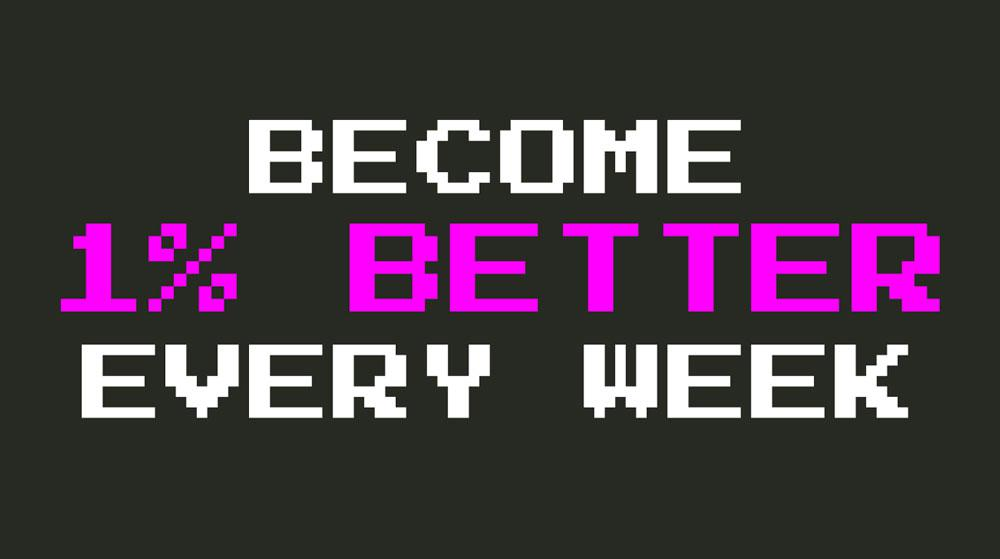

{kind=link}
via vim-galore

A plugin may grow and become quite long. The startup delay may become noticeable, while you hardly ever use the plugin. Then it's time for a quickload plugin.
Welcome back to the Exploring Vim Plugins series ! In this series you learn how to become a little bit more productive each day by discovering awesome Vim plugins and how to master them. And today, it’s time for one of my favorites: targets.vim .

{kind=link}
I've heard a lot about Vim , both pros and cons. It really seems you should be (as a developer) faster with Vim than with any other editor. I'm using Vim to do some basic stuff and I'm at best 10 times less productive with Vim.
The only two things you should care about when you talk about speed (you may not care enough about them, but you should) are:
Using alternatively left and right hands is the fastest way to use the keyboard.
Never touching the mouse is the second way to be as fast as possible. It takes ages for you to move your hand, grab the mouse, move it, and bring it back to the keyboard (and you often have to look at the keyboard to be sure you returned your hand properly to the right place)
Here are two examples demonstrating why I'm far less productive with Vim.
注意
Since they've moved to oni2, that changed lots of things, I'm gonna flag this post as obsolete. DON'T READ!
本来对这次版本更新还有些不以为然：为何不把精力放在完善 Language Server Protocol 支持，而跑去写什么新手教程呢？直到今天尝试了下教程，又看了文字版更新内容，才明白过来：Oni 编辑器正朝着我期待的方向前进！
来看看本次更新的两个重要功能：